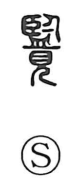

覧

Kun: miru, nagameru | On: ran
to look over ・ to view ・ to see
Explanation
覧 is a compound graph whose original form combines 監 and 見. The 監 element depicts one’s own figure reflected in a basin or tray of water—a water mirror—and it is the prototype of the mirror character 鑑. Joined with 見, “to see,” the whole character conveys the act of looking at an image and, by extension, viewing or looking over.